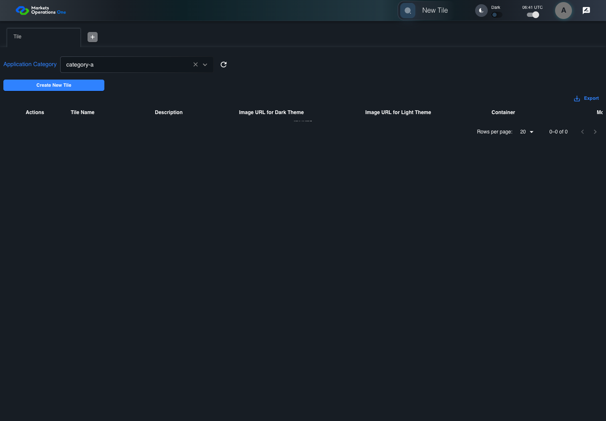
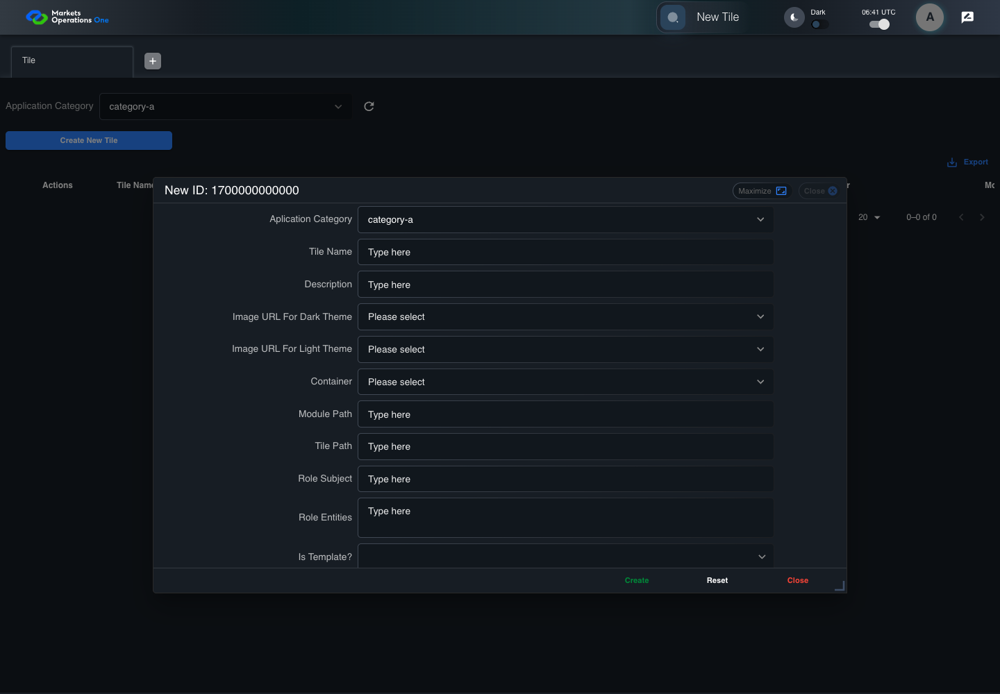
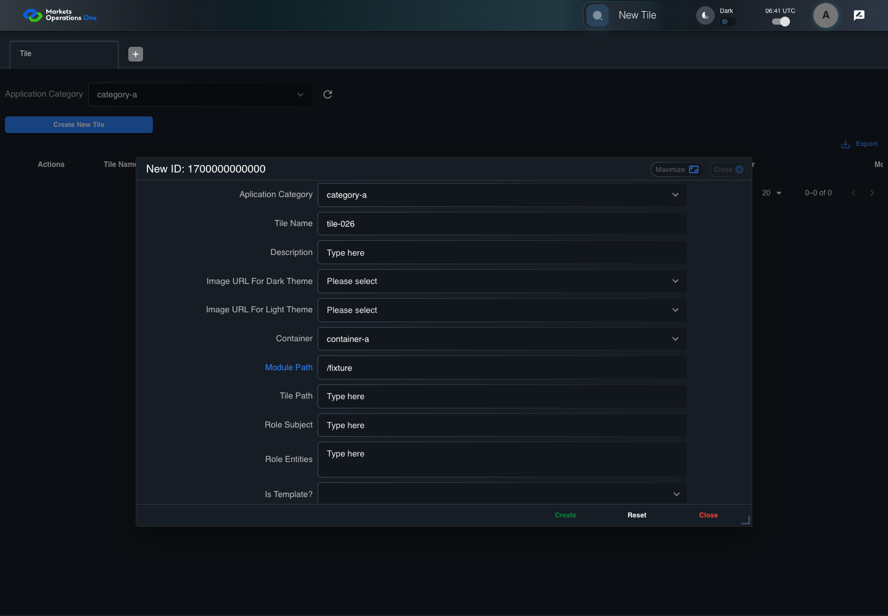
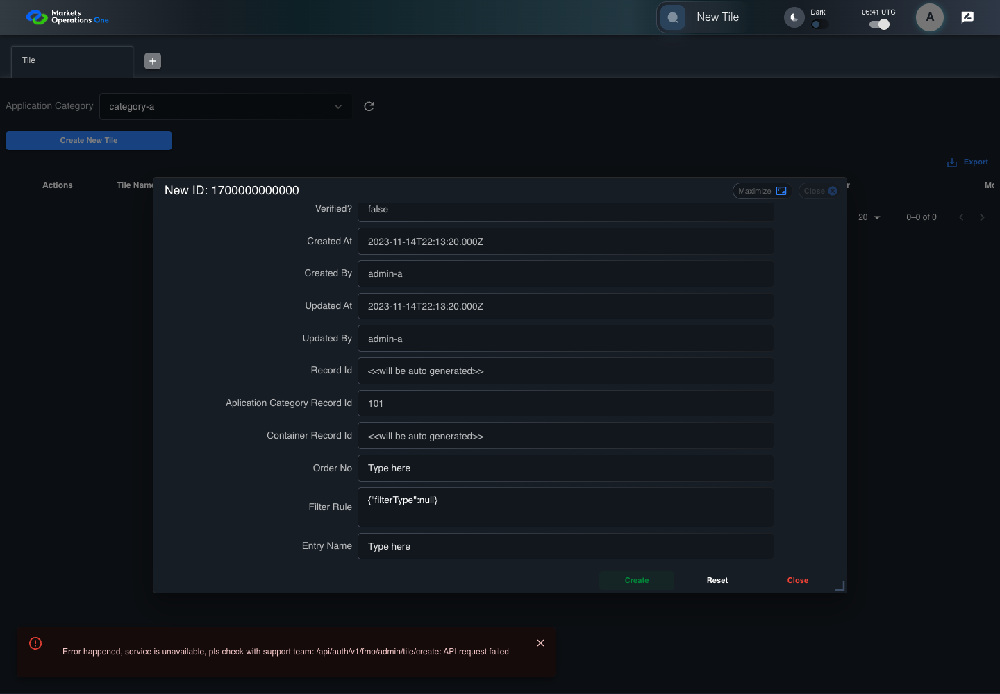

BFF-ADM-026 current BFF administration through actual UI
PASS · application/run-072/bff-adm-026-current-bff-administration-through-actual-ui-e8b7cc6b660e-attempt-1 · ACTUAL_APPLICATION_LOCAL_SERVICES
Actual current React and exact-current BFF admin controllers/services/JPA with actual migration DDL in disposable PostgreSQL. Controlled OUD/EMS2 identities and local Spring bootstrap. Fixture SQL seeds/mutates isolated records; service errors are actual database errors. Undefined agreed messages remain unresolved acceptance.
2026-10-22T06:41:20.111Z to 2026-10-22T06:41:31.000Z
Assertions and result · Artifact manifest · Exact run inputs and source hashes
Result SHA-256:ec600ee092326f3ccff7488e215aac7e4850d7c4ab96eac5def77d6147e60d62Machine observations
- actual-identity-projection.json
add2783ac3472c3dce9de1c17be0adb1cf44ef4a9d64bc44cb722e16d291319d - baseline-inputs.json
2747e0ab4cf2e376b19e3a82d04b1096221e57190112a676e1c8031dd25faa09 - bff-boundary.json
6e4294941ce69c0f29ddf03f642d51ac4236a743c6f932987d3c1ad21703116a - committed-ui-submission-comparisons.json
8f5eba9c13ff8ad3a32d3cfd4dcb4de0482fd8d2ce8bf20ef2dffa0a1f2ea0cc - creation-clock.json
bb7d5476a6118d365d329489ea3ced1dda5200e15b78ae6ea57fcc9b26e56578 - fixture-step-10.json
abb0f98a36d2aebd1c74b4969145f2eca5fbfe2fa7bfeb052e222a9b52d9d690 - fixture-step-11.json
317b00638bc6a9eb0bead1fc25af1658993e5897515a35e07df5ab59ff882231 - fixture-step-6.json
c3121fe210192704c44c9050537d18f3b4e67a413d35029b38b1ccb1fa6997a3 - fixture-step-7.json
685624c79b3956cb0be0f6987d196df0bfab765f394d504d4261b55c08ac75fb - fixture-step-8.json
2f1ebd47cc27188d1ddd20d6a8b1ca2ae0d41126f6835856b3f503ce392b80e6 - fixture-step-9.json
cc91940f8a7ac650030aef2476983fa40e5f00f102c940eedcdf78c95fffde50 - initial-persisted-records.json
9fda1bc6de59304204c59d9945fa2e6c349c5b463eee0f94fdce69ebcf0bb965 - persisted-after-submit.json
d47080c18d521074b9d1c7422591e753c6df169ff33fb1fdd3d5af9c5097e2d4 - reference-snapshot-3.json
071bdf46071098ddc9b91093806f443bf597861303200a799c69c8010400fdf0 - reference-snapshot-4.json
8d23745cf518449bf7c81bb42d3fc032cf055fa44d70102279f6358400e1a33e - rejection-or-policy-observation.json
ad6b4f1f6f4ad812901989ada5c14a20301e4a894919ef1f93283ec19f1a4609 - ui-origin-bff-requests.json
cc63af2e6eaa03e2a495e5e134dff0a5572c07aeb186abd089bdb68824880ef1 - undefined-message-contract.json
e0d4d838d01af673e6d811365f9c8b3099703dc25a018ceaff8337995e2ff4e6
Screenshot capture: CAPTURED. Named frames: 25.
Step screenshot evidence: COMPLETE. 24/24 canonical steps have execution screenshots.
Canonical step timeline
Given Admin A uses subject "admin-a" with role "FMO_ADMIN" in an isolated authenticated browser
Execution: PASSED.
1. step-01 Visible state after step 1: Given Admin A uses subject "admin-a" with role "FMO_ADMIN" in an isolated authenticated browser
2026-10-22T06:41:23.231Z · 1440×1000
Step: /Users/lushevol/code/github/ratan-release-impact/workbench/tasks/ui-test-coverage-20261022/test-cases.md:15784
SHA-256:2fa2ea5833532b4ad24c4985f6374c7148ff82c44bbd48f1bb9c944f07fea476And the controlled Tile fixture records the initial grid rows and persisted values
Execution: PASSED.
2. step-02 Visible state after step 2: And the controlled Tile fixture records the initial grid rows and persisted values
2026-10-22T06:41:23.394Z · 1440×1000
Step: /Users/lushevol/code/github/ratan-release-impact/workbench/tasks/ui-test-coverage-20261022/test-cases.md:15785
SHA-256:c7c3b72d35b6d74aa1a00a3b5f343ead9e334423d52802ab7266db7af9fb4a14And Category 101 has label "category-a" and Import Map 201 has Module Name "container-a"
Execution: PASSED.3. step-03 Visible state after step 3: And Category 101 has label "category-a" and Import Map 201 has Module Name "container-a"
2026-10-22T06:41:23.470Z · 1440×1000
Step: /Users/lushevol/code/github/ratan-release-impact/workbench/tasks/ui-test-coverage-20261022/test-cases.md:15786
SHA-256:af2b5fca1949a831724ddd9204b2990df75ea84b223f7b16ea3c558623ed318cAnd both references belong to "FMO_ADMIN" and the Tile page category filter value is Category 101
Execution: PASSED.
4. step-04 Visible state after step 4: And both references belong to "FMO_ADMIN" and the Tile page category filter value is Category 101
2026-10-22T06:41:23.538Z · 1440×1000
Step: /Users/lushevol/code/github/ratan-release-impact/workbench/tasks/ui-test-coverage-20261022/test-cases.md:15787
SHA-256:527fbafd5541000b08ab567e275850b4073a14d29ea2475a7c32b889e8b70bdaAnd the controlled creation clock returns 1700000000000 milliseconds
Execution: PASSED.
5. step-05 Visible state after step 5: And the controlled creation clock returns 1700000000000 milliseconds
2026-10-22T06:41:23.606Z · 1440×1000
Step: /Users/lushevol/code/github/ratan-release-impact/workbench/tasks/ui-test-coverage-20261022/test-cases.md:15788
SHA-256:fb8a7a6c2c25cdeb43318b28fcc3220ac160dd3e51ca4560f6eafb137812639eAnd the baseline fixture data defines "Tile Name" as "tile-026"
Execution: PASSED.
6. step-06 Visible state after step 6: And the baseline fixture data defines "Tile Name" as "tile-026"
2026-10-22T06:41:23.695Z · 1440×1000
Step: /Users/lushevol/code/github/ratan-release-impact/workbench/tasks/ui-test-coverage-20261022/test-cases.md:15789
SHA-256:43ead582dba303e50baa74b229c2d05e8d1feb95ec725890e679f546783ec64aAnd the baseline fixture data defines "Module Path" as "/fixture"
Execution: PASSED.7. step-07 Visible state after step 7: And the baseline fixture data defines "Module Path" as "/fixture"
2026-10-22T06:41:23.756Z · 1440×1000
Step: /Users/lushevol/code/github/ratan-release-impact/workbench/tasks/ui-test-coverage-20261022/test-cases.md:15790
SHA-256:e30e722437937f28c8b15147a4f5c3da0028cf4a0069fd6fd0c51bfb91b29b87And the baseline fixture data defines "Tile Path" as "/case-026"
Execution: PASSED.
8. step-08 Visible state after step 8: And the baseline fixture data defines "Tile Path" as "/case-026"
2026-10-22T06:41:23.837Z · 1440×1000
Step: /Users/lushevol/code/github/ratan-release-impact/workbench/tasks/ui-test-coverage-20261022/test-cases.md:15791
SHA-256:dc0078fbb308127fa1d40230ee2fa8f506f4c455669da7992d5d0a466cbca19eAnd the baseline fixture data defines "Role Entities" as "E-TRADE"
Execution: PASSED.
9. step-09 Visible state after step 9: And the baseline fixture data defines "Role Entities" as "E-TRADE"
2026-10-22T06:41:23.905Z · 1440×1000
Step: /Users/lushevol/code/github/ratan-release-impact/workbench/tasks/ui-test-coverage-20261022/test-cases.md:15792
SHA-256:34a115b9f3ce9db46f90e74d7b708d70239fa9b5c313d0203079177b9d699743And the baseline fixture data defines "Filter Rule" as ""
Execution: PASSED.
10. step-10 Visible state after step 10: And the baseline fixture data defines "Filter Rule" as ""
2026-10-22T06:41:23.990Z · 1440×1000
Step: /Users/lushevol/code/github/ratan-release-impact/workbench/tasks/ui-test-coverage-20261022/test-cases.md:15793
SHA-256:c21c8e3507fb85ce391eddeba24d17d2005af64ddae90aac4d432b79e148ba11And the baseline Tile references use "Aplication Category" "category-a" and "Container" "container-a"
Execution: PASSED.
11. step-11 Visible state after step 11: And the baseline Tile references use "Aplication Category" "category-a" and "Container" "container-a"
2026-10-22T06:41:24.062Z · 1440×1000
Step: /Users/lushevol/code/github/ratan-release-impact/workbench/tasks/ui-test-coverage-20261022/test-cases.md:15794
SHA-256:266e4132ea20fc8bcb480cec1aeffec560ba1162478b863863bf0414659524ceWhen Admin A clicks the button labeled "Create New Tile" on the Tile administration page
Execution: PASSED.12. step-12 Visible state after step 12: When Admin A clicks the button labeled "Create New Tile" on the Tile administration page
2026-10-22T06:41:24.540Z · 1440×1000
Step: /Users/lushevol/code/github/ratan-release-impact/workbench/tasks/ui-test-coverage-20261022/test-cases.md:15795
SHA-256:87a5f0af31b1dd4a67306ea67b8431ae753131bcbe66be98f787f7638f99a3c4Then the dialog titled "new ID: 1700000000000" is visible on the Tile administration page
Execution: PASSED.
13. step-13 Visible state after step 13: Then the dialog titled "new ID: 1700000000000" is visible on the Tile administration page
2026-10-22T06:41:25.205Z · 1440×1000
Step: /Users/lushevol/code/github/ratan-release-impact/workbench/tasks/ui-test-coverage-20261022/test-cases.md:15796
SHA-256:b9d1bfdccd8765b0856b29b2f4357acedaffee6b9625f9eeb5f6da77d4695b07When Admin A clicks the combobox labeled "Container" in dialog "new ID: 1700000000000"
Execution: PASSED.
14. step-14 Visible state after step 14: When Admin A clicks the combobox labeled "Container" in dialog "new ID: 1700000000000"
2026-10-22T06:41:25.636Z · 1440×1000
Step: /Users/lushevol/code/github/ratan-release-impact/workbench/tasks/ui-test-coverage-20261022/test-cases.md:15797
SHA-256:484f440de77f5c15066997ea98485a2b234c2fc4e04809a50c3e5e590845fac4And Admin A clicks the option labeled "container-a" in the expanded "Container" listbox for dialog "new ID: 1700000000000"
Execution: PASSED.
15. step-15 Visible state after step 15: And Admin A clicks the option labeled "container-a" in the expanded "Container" listbox for dialog "new ID: 1700000000000"
2026-10-22T06:41:26.115Z · 1440×1000
Step: /Users/lushevol/code/github/ratan-release-impact/workbench/tasks/ui-test-coverage-20261022/test-cases.md:15798
SHA-256:3ddb81ebcabe5d0a9bb9bace6ce538b0a1e22a9709699a6881e6f53360d3b586And Admin A fills the textbox labeled "Tile Name" with "tile-026" in dialog "new ID: 1700000000000"
Execution: PASSED.16. step-16 Visible state after step 16: And Admin A fills the textbox labeled "Tile Name" with "tile-026" in dialog "new ID: 1700000000000"
2026-10-22T06:41:26.581Z · 1440×1000
Step: /Users/lushevol/code/github/ratan-release-impact/workbench/tasks/ui-test-coverage-20261022/test-cases.md:15799
SHA-256:154ec2147046f1d1d2a2b02aa261347e12f5a8c3da323e9e25080179bb6c1a9bAnd Admin A fills the textbox labeled "Module Path" with "/fixture" in dialog "new ID: 1700000000000"
Execution: PASSED.
17. step-17 Visible state after step 17: And Admin A fills the textbox labeled "Module Path" with "/fixture" in dialog "new ID: 1700000000000"
2026-10-22T06:41:27.043Z · 1440×1000
Step: /Users/lushevol/code/github/ratan-release-impact/workbench/tasks/ui-test-coverage-20261022/test-cases.md:15800
SHA-256:20b87371984bf23f14e6d7e011e5e609be96dcab4c1cc09bd2eb4400877a8badAnd Admin A fills the textbox labeled "Tile Path" with "/case-026" in dialog "new ID: 1700000000000"
Execution: PASSED.18. step-18 Visible state after step 18: And Admin A fills the textbox labeled "Tile Path" with "/case-026" in dialog "new ID: 1700000000000"
2026-10-22T06:41:27.494Z · 1440×1000
Step: /Users/lushevol/code/github/ratan-release-impact/workbench/tasks/ui-test-coverage-20261022/test-cases.md:15801
SHA-256:61c7e6bc3c061ab45dbf0e45c17abbe041f36e876b5f8414b458768180d3cbbcAnd Admin A fills the textarea labeled "Role Entities" with "E-TRADE" in dialog "new ID: 1700000000000"
Execution: PASSED.19. step-19 Visible state after step 19: And Admin A fills the textarea labeled "Role Entities" with "E-TRADE" in dialog "new ID: 1700000000000"
2026-10-22T06:41:27.948Z · 1440×1000
Step: /Users/lushevol/code/github/ratan-release-impact/workbench/tasks/ui-test-coverage-20261022/test-cases.md:15802
SHA-256:429c1c8764874ba0238e5888a5662bae2dc9589f7b5b705000ee4cb9f729ebd3And Admin A fills the textarea labeled "Filter Rule" with "{\"filterType\":null}" in dialog "new ID: 1700000000000"
Execution: PASSED.20. step-20 Visible state after step 20: And Admin A fills the textarea labeled "Filter Rule" with "{\"filterType\":null}" in dialog "new ID: 1700000000000"
2026-10-22T06:41:28.411Z · 1440×1000
Step: /Users/lushevol/code/github/ratan-release-impact/workbench/tasks/ui-test-coverage-20261022/test-cases.md:15803
SHA-256:8a8ed4cd31dc6ba894b20f42bcbf1c4011dd1ef62e9f339e151dda2830c182caAnd Admin A clicks the button labeled "Create" in dialog "new ID: 1700000000000"
Execution: PASSED.
21. step-21 Visible state after step 21: And Admin A clicks the button labeled "Create" in dialog "new ID: 1700000000000"
2026-10-22T06:41:28.863Z · 1440×1000
Step: /Users/lushevol/code/github/ratan-release-impact/workbench/tasks/ui-test-coverage-20261022/test-cases.md:15804
SHA-256:76976e70b2e393fec375be57e3472612a65ac3a94935f6ab2afb31c2fe766355Then the dialog titled "new ID: 1700000000000" remains visible on the Tile administration page
Execution: PASSED.22. step-22 Visible state after step 22: Then the dialog titled "new ID: 1700000000000" remains visible on the Tile administration page
2026-10-22T06:41:29.022Z · 1440×1000
Step: /Users/lushevol/code/github/ratan-release-impact/workbench/tasks/ui-test-coverage-20261022/test-cases.md:15805
SHA-256:b0b5c2c8f5b2bd6e6e649bcb1fec81bbe2ed9ec88a1828b8d4e45f70ed5e1d09And the alert with severity "error" in the portal snackbar displays the captured rejection response message
Execution: PASSED.23. step-23 Visible state after step 23: And the alert with severity "error" in the portal snackbar displays the captured rejection response message
2026-10-22T06:41:29.191Z · 1440×1000
Step: /Users/lushevol/code/github/ratan-release-impact/workbench/tasks/ui-test-coverage-20261022/test-cases.md:15806
SHA-256:ad73f8635981d431b400c3300710850f119fb4694b1117baae2cae7bc8932230And the Tile data grid with column "Record Id" row identifiers and loaded field values equal the initial grid snapshot on the Tile administration page
Execution: PASSED.24. step-24 Visible state after step 24: And the Tile data grid with column "Record Id" row identifiers and loaded field values equal the initial grid snapshot on the Tile administration page
2026-10-22T06:41:29.436Z · 1440×1000
Step: /Users/lushevol/code/github/ratan-release-impact/workbench/tasks/ui-test-coverage-20261022/test-cases.md:15807
SHA-256:2a94d311fb2204bdfe03b1812bf7757eef9798cfc00a9b721ccc2bf87bc2929e
Additional named frames
Screenshots establish visible state only. Assertions and traces support functional claims.